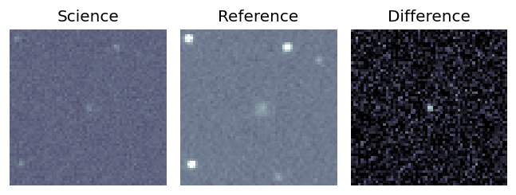
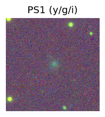
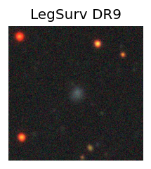
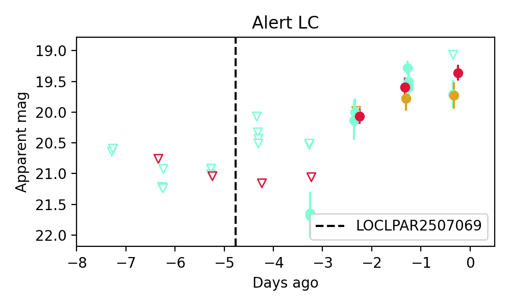
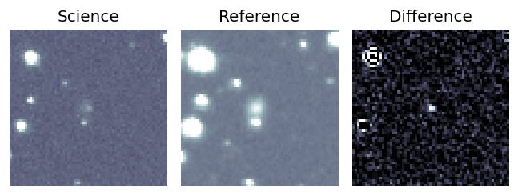
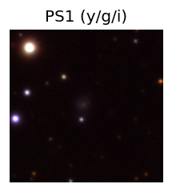
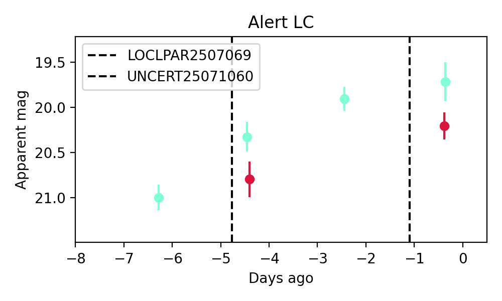

Candidate List 20250711Previous Day Next Day
Section 1: New Sources (age<1d) Section 2: Old (1-5d) sources observed last nightplaceholder
Section 1: New Afterglow/FBOT Cands Last Night (0)
Section 2: Older Sources Observed Last Night (3)
0. ZTF25abaefwo (FBOT?) [Back to Top] [Share] [Trigger Swift] [Fritz] [Lasair]RA, Dec: 332.13441, -16.14838 22h 8m32.26s, -16d-8m-54.16sGalactic (l, b): 40.60249, -50.77655 ext(g-r) = 0.036


PS1: 1 source in 3 arcsec Closest: d = 0.81 arcsec photoz=0.13+/-0.05 peak abs mag = -20.53
LegacySurvey: 0 sources in 3 arcsec

Extinction-corrected gr color:
From alerts: -0.31 +/- 0.14 mag
Extinction-corrected gi color:
From alerts: -0.27 +/- 0.18 mag
Extinction-corrected ri color:
From alerts: 0.04 +/- 0.2 mag
Consistent with synchrotron, g-r>0!
Rise Rate:
g: 0.33 mag/day
r: 0.3 mag/day
i: 0.32 mag/day
Fade Rate:
g: -99 mag/day
r: -99 mag/day
i: -99 mag/day
1. ZTF25abaubav (Afterglow?) [Back to Top] [Share] [Trigger Swift] [Fritz] [Lasair]RA, Dec: 357.55308, 6.76032 23h50m12.74s, 6d45m37.14sGalactic (l, b): 97.10057, -53.01312 ext(g-r) = 0.119
PS1: 0 sources in 3 arcsec
LegacySurvey: 0 sources in 3 arcsec

Extinction-corrected gr color:
From alerts: 0.23 +/- 0.26 mag
Extinction-corrected gi color:
From alerts: -0.2 +/- 0.32 mag
Extinction-corrected ri color:
From alerts: -0.43 +/- 0.25 mag
Consistent with synchrotron, g-r>0!
Rise Rate:
g: 0.71 mag/day
r: 0.99 mag/day
i: -99 mag/day
Fade Rate:
g: -99 mag/day
r: -99 mag/day
i: -99 mag/day
2. ZTF25abawxzt (FBOT?) [Back to Top] [Share] [Trigger Swift] [Fritz] [Lasair]RA, Dec: 292.23591, 39.52896 19h28m56.62s, 39d31m44.24sGalactic (l, b): 72.27152, 10.27556 ext(g-r) = 0.182
PS1: 1 source in 3 arcsec Closest: d = 1.32 arcsec photoz=0.52+/-0.10 peak abs mag = -23.30
LegacySurvey: 0 sources in 3 arcsec

Extinction-corrected gr color:
From alerts: -0.67 +/- 0.26 mag
Rise Rate:
g: 0.32 mag/day
r: 0.15 mag/day
i: -99 mag/day
Fade Rate:
g: -99 mag/day
r: -99 mag/day
i: -99 mag/day